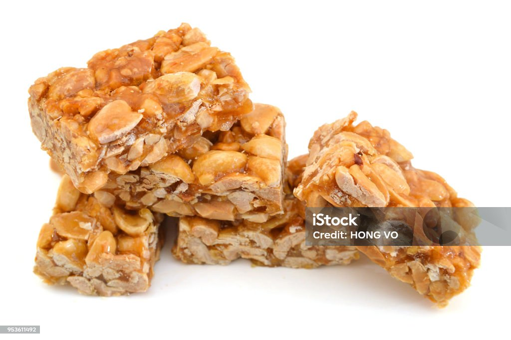

Delicous Gozinaki
Home

Gozinaki is staple of Georgian New years sweets , its really easy to make and has crazy nutritional value
you can make this delicious treat in under 20 minutes , so lets get started
Ingredients:
- nuts(walnuts or hazelnuts)
- high quality honey
How to make it:
- dice nuts on cutting board
- roast nuts on a pan
- add honey to nuts after they turn light brown
- take mixture out on cutting board from pan
- slice while hot and wait to cool down
- enjoy